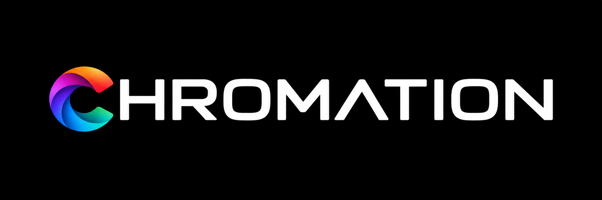
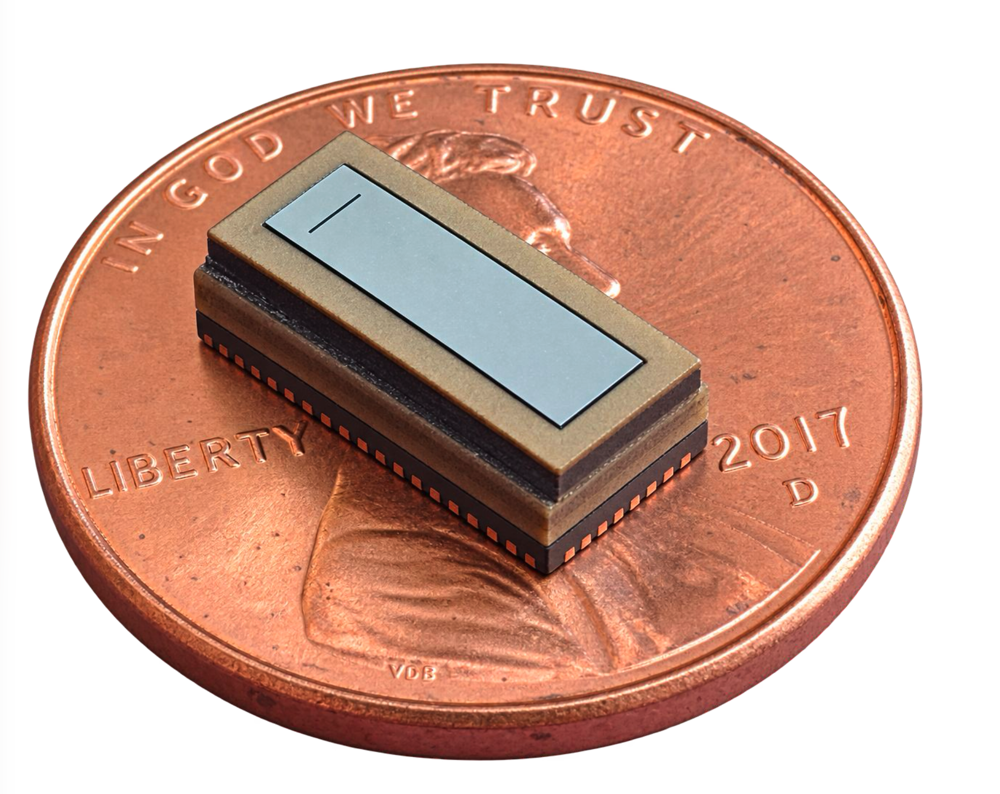
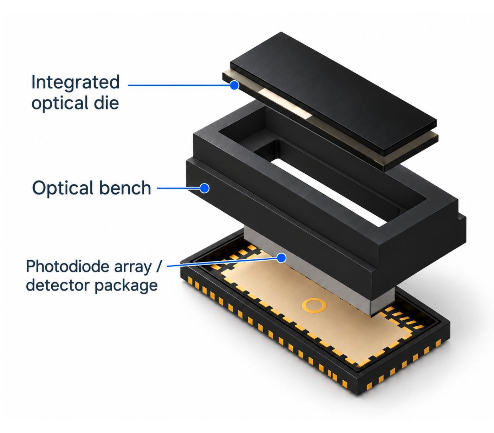
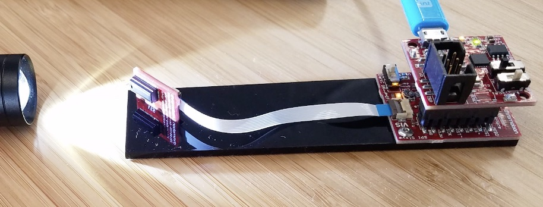

Healthcare & diagnostics
Non-invasive monitoring, point-of-care measurement, and biological sample analysis.

Integrated spectral sensing
Make spectroscopy a product feature - not a lab instrument.Broadband spectral sensing for product integration - without external optics.
The Chromation platform

Photonic crystal scattering creates a wavelength-dependent response.
Light management is integrated into a compact monolithic structure.
Optical die and photodetector array fit into an SMT-ready package.
How it works
Creates wavelength-dependent optical response in a compact volume.
Integrates the entrance slit, apertures, mirrors, absorbers, and photonic crystal into a folded optical path on one wafer.

Why it matters
Target applications
Non-invasive monitoring, point-of-care measurement, and biological sample analysis.
Lighting control, process monitoring, and embedded instruments.
Air and water sensing, pollution monitoring, and exposure detection.
Food and oil signatures, material verification, and counterfeit detection.
Crop management, plant health, and field sensing.
UV exposure, ambient light sensing, and personal-device integration.
From fit to product
Define the spectral target, illumination, package constraints, and success criteria.
Evaluate a packaged demo system or component-level measurement.
Map optical, electrical, mechanical, and software integration.
Work with ODM and manufacturing partners where needed.

About Chromation
Chromation brings foundational spectral-sensing technology into compact, integration-ready products.
Built on differentiated technology for integrated broadband spectral sensing.
Rooted in advanced research and developed to solve real product-integration challenges.
Focused on turning the platform into a dependable path to product integration.
Combining expertise in photonics, spectroscopy, product development, and commercialization.
Start with your use case
Chromation can help evaluate whether compact broadband spectroscopy fits your product, instrument, or sensing platform.
info@chromationspec.comBronx, New York